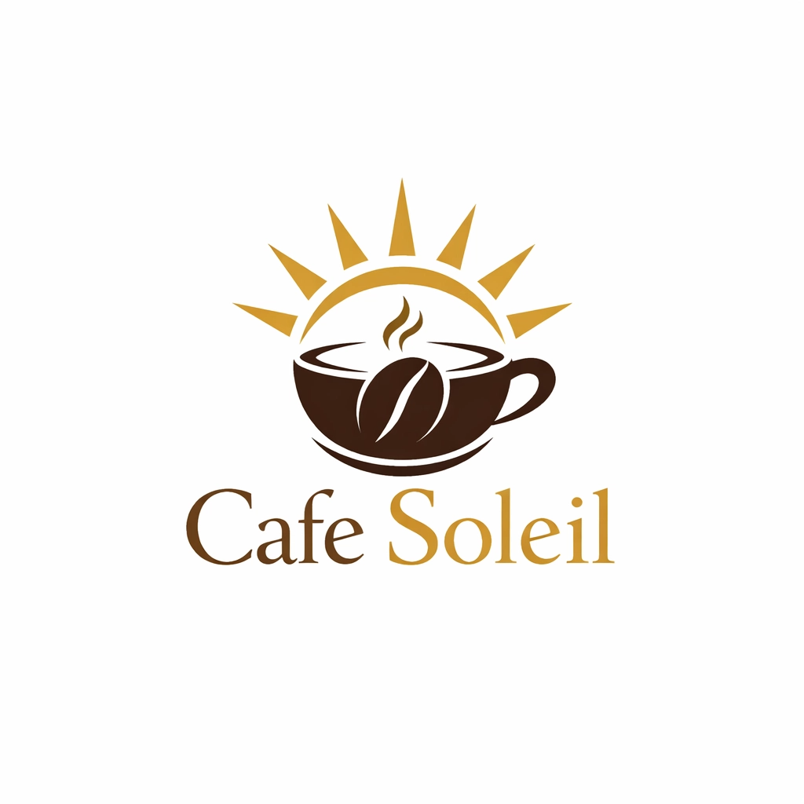
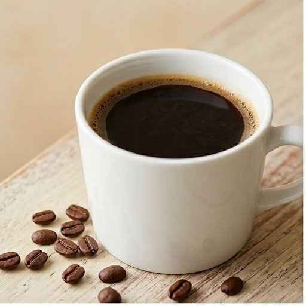
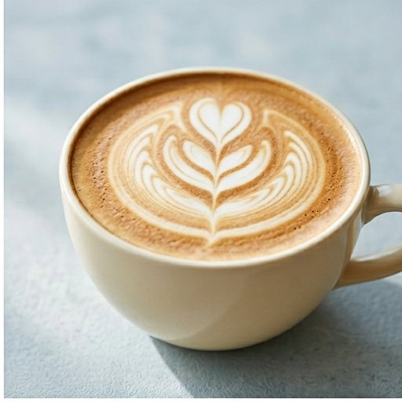
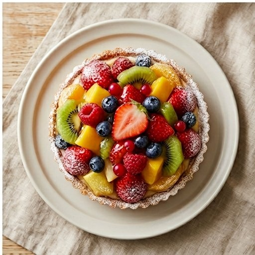

都市の中で深呼吸できる場所を目指した、架空カフェ「Cafe Soleil」のコーポレートサイトです。
朝の静けさ、昼のやわらかな光、夜の落ち着き。どの時間帯でも居心地よく過ごせる空間をテーマに、情報の読みやすさを意識して構成しています。
見出し階層とセクション分割を明確にし、ユーザーが必要な情報に迷わず到達できる導線にしました。


¥550
豆の香りを活かした定番ブレンド。

¥620
ミルクの甘みを感じる一杯。

¥680
旬の果物を使った日替わりタルト。